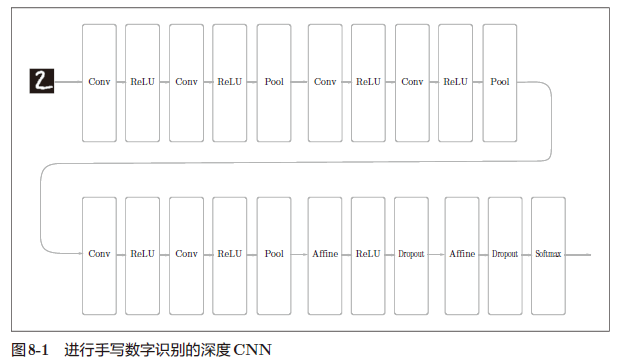
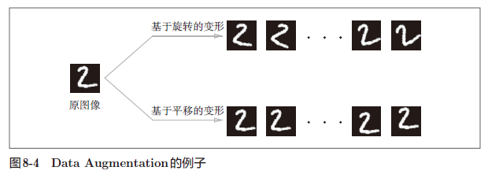

DL-深度学习入门-基于Python的理论与实现-8-深度学习
目录
8.1 加深网络
8.1.1 向更深层的网络出发

这个网络有如下特点:
基于3×3 的小型滤波器的卷积层。
激活函数是ReLU。
全连接层的后面使用Dropout层。
基于Adam的最优化。
使用He初始值作为权重初始值。
8.1.2 进一步提高识别精度
在一个标题为“What is the class of this image ?”的网站上，以排行榜的形式刊登了目前为止通过论文等渠道发表的针对各种数据集的方法的识别精度。
对于MNIST 数据集，层不用特别深就获得了（目前）最高的识别精度。一般认为，这是因为对于手写数字识别这样一个比较简单的任务，没有必要将网络的表现力提高到那么高的程度。因此，可以说加深层的好处并不大。而之后要介绍的大规模的一般物体识别的情况，因为问题复杂，所以加深层对提高识别精度大有裨益。
进一步提高识别精度的技术和线索：
集成学习
学习率衰减
Data Augmentation（数据扩充）

8.1.3 加深层的动机
可以减少网络的参数数量
- 与没有加深层的网络相比，加深了层的网络可以用更少的参数达到同等水平（或者更强）的表现力
使学习更加高效
- 与没有加深层的网络相比，通过加深层，可以减少学习数据，从而高效地进行学习
8.2 深度学习的小历史
2012 年举办的大规模图像识别大赛ILSVRC（ImageNet Large Scale Visual Recognition Challenge）。在那年的比赛中，基于深度学习的方法（通称AlexNet）以压倒性的优势胜出，彻底颠覆了以往的图像识别方法。
8.2.1 ImageNet
ImageNet 是拥有超过 100 万张图像的数据集。它包含了各种各样的图像，并且每张图像都被关联了标签（类别名）。每年都会举办使用这个巨大数据集的=ILSVRC 图像识别大赛。
8.2.2 VGG
VGG是由卷积层和池化层构成的基础的CNN。它的特点在于将有权重的层（卷积层或者全连接层）叠加至16 层（或者19 层），具备了深度（根据层的深度，有时也称为“VGG16”或“VGG19”）。
8.2.3 GoogLeNet
GoogLeNet 的特征是，网络不仅在纵向上有深度，在横向上也有深度（广度）。GoogLeNet 在横向上有“宽度”，这称为“Inception 结构”。
8.2.4 ResNet
ResNet 是微软团队开发的网络。它的特征在于具有比以前的网络更深的结构。
ResNet以前面介绍过的VGG网络为基础，引入快捷结构以加深层。
实践中经常会灵活应用使用ImageNet 这个巨大的数据集学习到的权重数据，这称为迁移学习，将学习完的权重（的一部分）复制到其他神经网络，进行再学习（fine tuning）。比如，准备一个和VGG 相同结构的网络，把学习完的权重作为初始值，以新数据集为对象，进行再学习。迁移学习在手头数据集较少时非常有效。
8.3 深度学习的高速化
基于 GPU 的高速化
分布式学习
- 将深度学习的学习过程扩展开来的想法（也就是分布式学习）
运算精度的位数缩减
- 计算机中表示小数时，有32 位的单精度浮点数和64 位的双精度浮点数等格式。根据以往的实验结果，在深度学习中，即便是16 位的半精度浮点数（half float），也可以顺利地进行学习。实际上，NVIDIA的下一代GPU框架Pascal 也支持半精度浮点数的运算，由此可以认为今后半精度浮点数将被作为标准使用。
8.4 深度学习的应用案例
物体检测
- 物体检测是从图像中确定物体的位置，并进行分类的问题。
图像分割
- 图像分割是指在像素水平上对图像进行分类。
要基于神经网络进行图像分割，最简单的方法是以所有像素为对象，对每个像素执行推理处理。比如，准备一个对某个矩形区域中心的像素进行分类的网络，以所有像素为对象执行推理处理。正如大家能想到的，这样的方法需要按照像素数量进行相应次forward处理，因而需要耗费大量的时间（正确地说，卷积运算中会发生重复计算很多区域的无意义的计算）。为了解决这个无意义的计算问题，有人提出了一个名为FCN（Fully Convolutional Network）的方法。该方法通过一次forward处理，对所有像素进行分类。
FCN的字面意思是“ 全部由卷积层构成的网络”。相对于一般的CNN包含全连接层，FCN将全连接层替换成发挥相同作用的卷积层。在物体识别中使用的网络的全连接层中，中间数据的空间容量被作为排成一列的节点进行处理，而只由卷积层构成的网络中，空间容量可以保持原样直到最后的输出。
图像标题的生成
- 一个基于深度学习生成图像标题的代表性方法是被称为NIC（Neural Image Caption）的模型。
NIC基于CNN从图像中提取特征，并将这个特征传给RNN。RNN以CNN提取出的特征为初始值，递归地生成文本。这里，我们不深入讨论技术上的细节，不过基本上NIC是组合了两个神经网络（CNN和RNN）的简单结构。基于NIC，可以生成惊人的高精度的图像标题。我们将组合图像和自然语言等多种信息进行的处理称为多模态处理。
8.5 深度学习的未来
8.5.1 图像风格变换
“A Neural Algorithm of Artistic Style”。输入两个图像后，会生成一个新的图像。两个输入图像中，一个称为“内容图像”，另一个称为“风格图像”。
8.5.2 图像的生成
- DCGAN（Deep Convolutional Generative Adversarial Network）
8.5.3 自动驾驶
- 基于CNN的神经网络 SegNet
8.5.4 Deep Q-Network（强化学习）
8.6 小结
对于大多数的问题，都可以期待通过加深网络来提高性能。
在最近的图像识别大赛ILSVRC中，基于深度学习的方法独占鳌头，使用的网络也在深化。
VGG、GoogLeNet、ResNet等是几个著名的网络。
基于GPU、分布式学习、位数精度的缩减，可以实现深度学习的高速化。
深度学习（神经网络）不仅可以用于物体识别，还可以用于物体检测、图像分割。
深度学习的应用包括图像标题的生成、图像的生成、强化学习等。最近，深度学习在自动驾驶上的应用也备受期待。